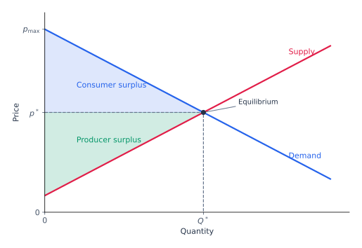

Price-taking consumers
Each consumer chooses a utility-maximizing bundle within their budget. An individual purchase does not affect the market price.
Competitive prices, market clearing, surplus, and experimental evidence.
Market structures differ in how much influence individual agents have over prices. This chapter studies perfect competition: consumers and firms take market prices as given.
Each consumer chooses a utility-maximizing bundle within their budget. An individual purchase does not affect the market price.
Each firm chooses a profit-maximizing production plan within its technology. An individual firm's output does not affect the market price.
Monopoly, duopoly, and oligopoly instead allow sellers to influence prices; monopsony gives market power to a buyer.
Partial equilibrium studies one market while holding other prices and consumers' incomes fixed. It is useful when feedback from the rest of the economy is small.
At each price \(p\), add the quantities demanded by all consumers:
\(I\) is the set of consumers; \(q_i\) is consumer \(i\)'s utility-maximizing demand for the good.
\(p_{-x}\) contains all other goods' prices; \(m_i\) is consumer \(i\)'s income. Both are held fixed when drawing \(Q^d(p)\).
Market demand generally depends on both total income and its distribution. Scaling all prices and every consumer's income by the same positive factor leaves demand unchanged: demand is homogeneous of degree zero in prices and incomes jointly.
At each output price \(p\), add firms' profit-maximizing quantities, taking input prices \(w\) as given:
The set \(J\) of existing firms is fixed. A firm can adjust its output or shut down, subject to its short-run costs.
Firms can enter or exit. Market supply must account for how the number of active firms responds to profitability.
A competitive equilibrium price \(p^*\) makes buyers' and sellers' optimal choices compatible:
Each consumer and firm is already choosing optimally at that price, and the total quantity buyers want equals the total quantity sellers offer. No agent has a profitable unilateral change of quantity taking the price as given.
With free entry and identical firms that can replicate the same technology, a long-run equilibrium combines market clearing with zero economic profit for active firms:
If some output \(q>0\) gives \(p>AC(q)\), an entrant can earn positive economic profit. Entry expands market supply.
If \(p<\min_{q>0}AC(q)\), no positive output covers total cost. A firm exits once all costs are avoidable.
At the minimum of average cost, an active firm breaks even. If this minimum occurs at an interior output and cost is differentiable, \(\widehat p=AC(q^*)=MC(q^*)\). Market demand then determines the number of firms needed at that output.
Define excess demand \(Z(p)=Q^d(p)-Q^s(p)\). If demand and supply are continuous on a price interval, with excess demand at its lower end and excess supply at its upper end, the intermediate value theorem guarantees a price where \(Z(p)=0\).
This mismatch alone does not rule out equilibrium at every other price. Nor does discontinuity always prevent clearing: three buyers demanding 2 units each can trade with two sellers supplying 3 units each, provided these are their optimal choices at a common price.
If excess demand is strictly decreasing in price, it can cross zero at most once. For example, strictly decreasing demand and nondecreasing supply are sufficient for uniqueness, if an equilibrium exists.

Consumer surplus measures willingness to pay above the amount actually paid. For market demand \(Q^d(p)\), with a choke price \(p_{\max}\) at which demand becomes zero:
Consumer surplus falls. The size of the loss is:
Consumer surplus rises. The size of the gain is:
Both expressions are positive when demand is positive over the relevant interval. Equivalently, the signed change is \(\Delta CS=-\int_{p_0}^{p_1}Q^d(s)\,ds\).
Producer surplus is revenue above the variable cost of supplying the units sold. With inverse supply \(P^s(Q)\), representing marginal cost over the relevant range:
If supply is zero below a nonnegative minimum price, this is also the area \(\int_0^{p^*}Q^s(p)\,dp\). For a firm with \(VC(0)=0\), producer surplus equals \(pq-VC(q)\), so:
An experiment lets researchers specify buyers' values and sellers' costs, calculate a competitive benchmark, and observe whether actual trades approach it.
Chamberlain's early classroom markets did not closely reproduce the competitive prediction. Smith (1962) studied repeated trading with public bids and offers in a double oral auction.
Each buyer receives a maximum purchase price; each seller receives a minimum sale price. Participants initially know their own reservation prices.
Buyers announce bids, sellers announce offers, and accepting an offer creates a trade. Trading repeats over successive periods.
Smith measures transaction-price deviations from the theoretical equilibrium price \(p^*\), rather than from the sample mean:
Here \(M\) is the number of trades in a period. A smaller \(\alpha\) means transactions lie closer to the competitive benchmark.
Transaction prices generally converged toward the competitive prediction over repeated periods, despite limited participants and private information. Adjustment depended on the supply and demand schedules. In the usual upward-sloping supply case, a positive demand shift raises the equilibrium price.
Smith, V. L. (1962). An experimental study of competitive market behavior. Journal of Political Economy, 70(2), 111–137.
A transaction price alone does not reveal the buyer's willingness to pay or the seller's cost. Controlled values make equilibrium and the gains from trade measurable.
Researchers can hold institutions and endowments fixed, repeat the market, or introduce a demand shock. This helps separate the effect of interest from taxes, regulation, or other changes.
A rising asset price may reflect changing fundamentals or speculation about resale. Laboratory asset markets make the dividend process observable, allowing researchers to compare prices with a known expected-payoff benchmark.
Can bubbles appear even when traders know the asset's dividend distribution and finite lifetime?
Traders receive cash and assets and trade in a double auction. In the 15-period treatment considered here, each asset pays 0, 8, 28, or 60 cents per period with equal probability.
The expected dividend is 24 cents. With no discounting and no terminal resale value, the expected remaining dividends at the start of period \(t\) are:
Thus \(FV_1=360\) cents and \(FV_{15}=24\) cents; value falls to zero after the final dividend.
Prices often rose above this benchmark and later crashed. Bubbles tended to diminish with trader experience. Knowledge of the dividend distribution alone did not eliminate speculative pricing; this does not mean traders knew one another's future actions.
Smith, V. L., Suchanek, G. L., & Williams, A. W. (1988). Bubbles, crashes, and endogenous expectations in experimental spot asset markets. Econometrica, 56(5), 1119–1151.
Do bubbles return when inexperienced traders enter a market with experienced traders?
Six traders first participate in three successive markets. In a fourth market, either two or four traders are replaced by newcomers, leaving respectively two-thirds or one-third of the group experienced.
Bubbles were substantially reduced even when experienced traders were a minority. Experience can therefore influence a mixed market, rather than helping only when everyone has participated before.
Dufwenberg, M., Lindqvist, T., & Moore, E. (2005). Bubbles and experience: An experiment. American Economic Review, 95(5), 1731–1737.
Does excitement itself increase asset-price bubbles, rather than simply accompany them?
Before trading in a bubble-prone asset market, participants watch videos intended to induce excitement, calm, or fear. These treatments vary the emotional state while keeping the market environment comparable.
Excitement is positive and intense; calm is positive but less intense; fear is intense but negative. Emotion checks assess whether the videos produce the intended reactions.
Bubble magnitude captures average overpricing relative to fundamental value; peak amplitude captures its largest extent.
Across 55 markets, the excitement treatment produced larger bubbles in both magnitude and amplitude than calm or fear. The experiment supports a causal role for induced excitement in this setting.
Andrade, E. B., Odean, T., & Lin, S. (2016; first published online in 2015). Bubbling with excitement: An experiment. Review of Finance, 20(2), 447–466.